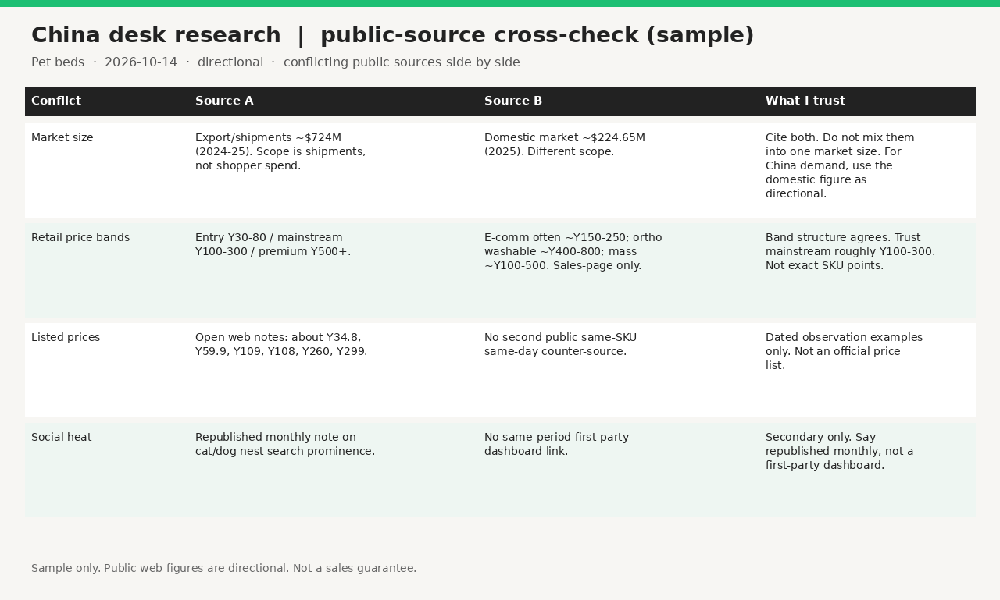

Demand probe · one package · public sources only
China desk research: public-source market snapshot (EN)
$200 · single package
English China desktop snapshot from public web and social sources only. Not a proven long-term product line.

PayPal invoice is sent after scope/turnaround confirm · $200.
Who this is for
- Brands / DTC teams that already have a product line and need China retail or social signals to tweak SKUs or decide China entry.
- Not for factory hunting, 1688 sourcing, or “just peek at prices.”
What you get
- EN market snapshot for one agreed category
- Source list with clickable links or dated screenshots
- Cross-check table: conflicting public sources side by side, what I trust and why
- Typical turnaround: 3–5 business days after payment for one agreed category (stated in the confirm email)
Why not just ChatGPT
This is not sold as translation or formatting. The paid part is gathering open sources, spotting conflicts, and writing trust labels. It does not include private sales ranks, platform seller dashboards, or partner/agency data.
Sample — China pet beds cross-check (excerpt)
| Conflict | Source A | Source B | Trust / why |
|---|---|---|---|
| Retail price bands | SourceReady: entry ¥30–80 / mainstream ¥100–300 / premium ¥500+ | IndexBox sales-page summary: e-comm often ~¥150–250; ortho washable ~¥400–800 (directional only) | Band structure aligns; trust “mainstream roughly ¥100–300.” SKU spots from openable editor pieces, not IndexBox as exact points. |
| Listed prices | Sina editor notes citing JD/Tmall observe prices e.g. ¥34.8 / ¥59.9 / ¥109 | No second public same-SKU same-day counter-source | Treat as dated observation examples (2026-10); not an official price list. |
| Social heat | Petdhw republish of Xiaohongshu monthly: cat/dog nest search prominence | No same-period official XHS original clickable | Secondary only; wording “per republished XHS monthly,” not first-party dashboard. |
Viewable sample notes: cross-check-pet-beds.md · directional where noted · market-size “export vs domestic” headline figures are not used as a selling claim on this page (evidence for those labels was too thin).
Not included
- No factory intros · 1688 RFQs · product samples · QC / audit · customs / compliance advice · sales guarantees
- No private GMV ranks or seller-backend data
- Vendor sales-page figures = directional only
- Same-category quarterly update quoted separately if asked
ICP screen
Before accepting work: you already sell or are launching a real product line and need China signals for SKU or entry decisions. Requests that ask for sourcing, suppliers, factories, QC, customs, or 1688 are declined.
Invoice after short confirm · $200.